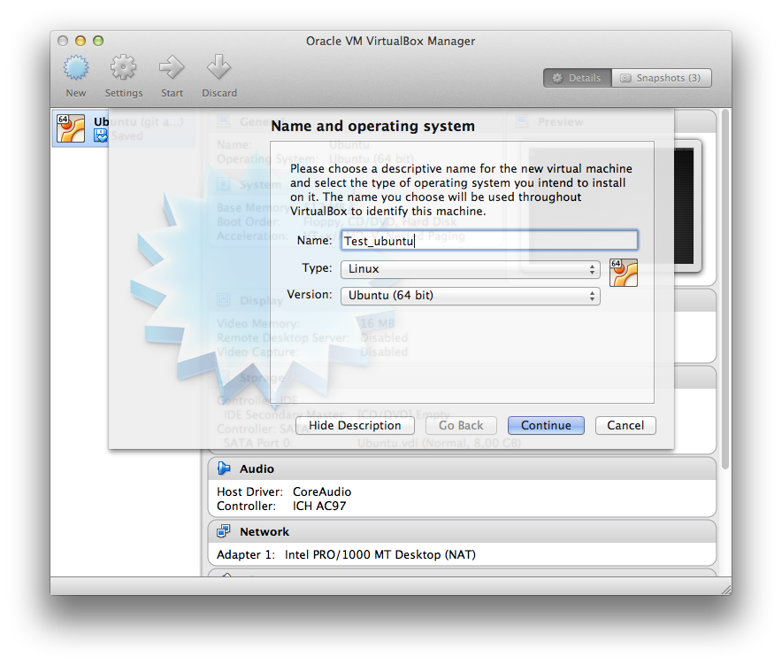

Install VirtualBox
- Download VirtualBox for your machine: Download VirtualBox
- Read more about installation details here: VirtualBox User Manual, Chapter 2. Installation Details
- Also download and install the VirtualBox Extension Pack
Terminology
Read and understand the following terms, and how they relate to each other.
- Host Operating System
- Guest Operating System
- Virtual Machine
Download Ubuntu ISO
- Download Ubuntu. Any version will do.
Create a Virtual Machine
- Start VirtualBox
-
Create a new Virtual Machine

-
Give it a name, and select Linux/Ubuntu (64 bit)

- Click through all the other options with Continue and Create (it alternates)
-
Double click your newly created virtual machine. It will now ask you to select an install media.
Click on the folder, select your downloaded ubuntu image, and then click on Start
You are now running the ubuntu installer in your virual machine. Install Ubuntu in your usual way.
Start/Pause/Stop your Virtual Machine
Summary
You have now installed VirualBox. You have created a new virtual machine, and have installed ubuntu on it.
Review Questions
- What can you use your virtual machine for?
- Can you start up your VM automatically?
- Can you start up your VM without attaching a screen (and run it like a true server)?
- What if your desired environment consists of several machines?
- Can you install different software so that you may boot up specialised versions of your guest operating systems?